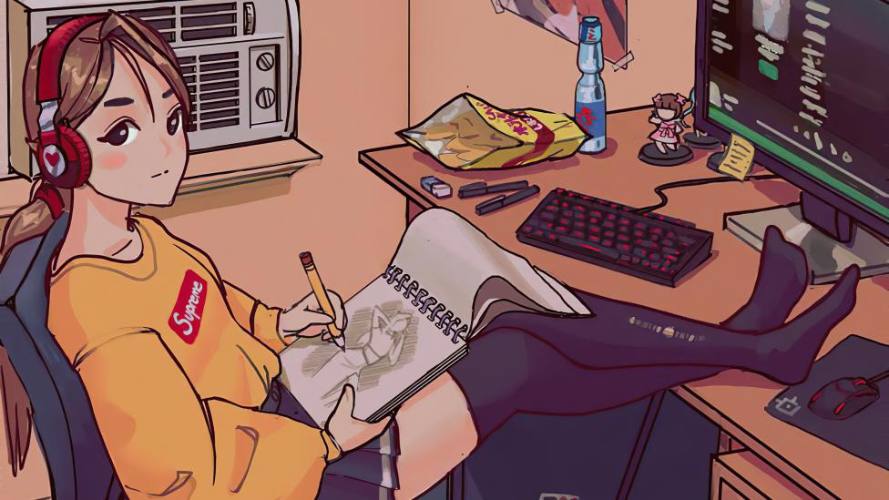

Cosas que hago para entretenerme en casa |
|
Me gusta leer en esta aplicación, ya que hay todo tipo de lectura variada, ya que nos permite esa libertad
de escoger el tipo de lectura de nuevos escritores, que incluso en la actualidad Otro de mis pasatiempos favoritos, es maquillarme, practicar de varios tipos, sean artísticos o mejorar la apariencia
de ellos, incluso que grabo algunos tik toks para tener ese recuerdo de como Me gusta dibujar mientras escucho música, pero no lo hago tan a menudo ya que me estresa cuando el dibujo no queda como me lo espero, o me desespera el echo de no terminar, pero escuchando música me resulta mas fácil porque me relaja un poco, la musica es como una especie de calmante para mí.  |